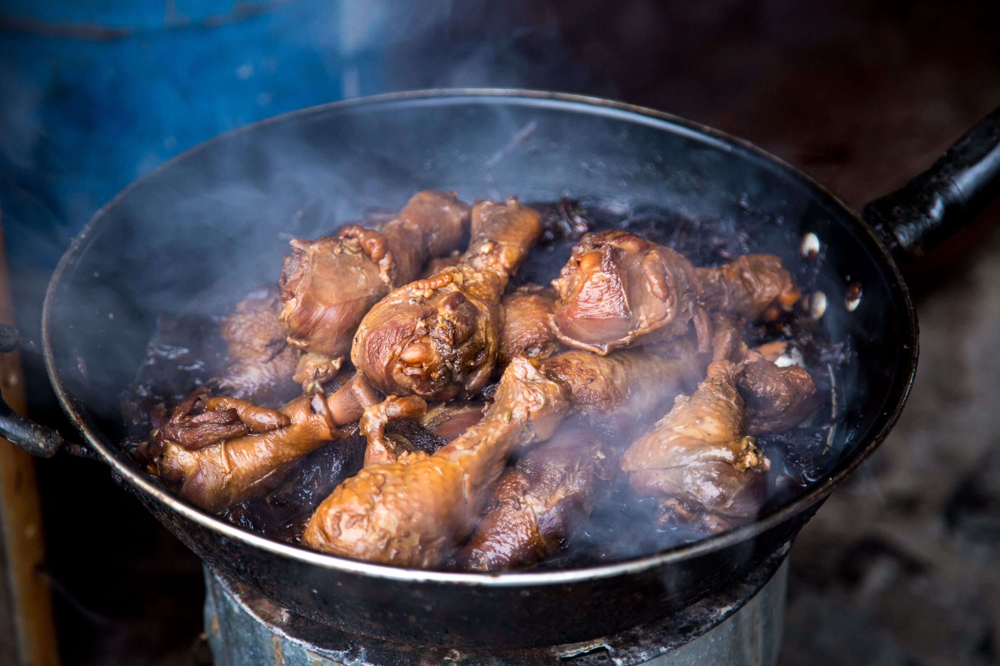

Home
Chicken Adobo

Chicken Adobo; one of the best Pinoy dish
Chicken adobo is considered the most iconic Filipino dish. The nation's most favorite dish that the Filipinos love the most.
Ingredients
- 1 ½ cups water
- 1 cup distilled white vinegar
- 4 tablespoons soy sauce
- 1 teaspoon whole peppercorns
- 4 cloves garlic, crushed
- salt to taste
- 1 (2 to 3 pound) whole chicken, cut into pieces
- 2 tablespoons vegetable oil
Steps
- In a large pot, combine the water, vinegar, soy sauce, peppercorns, garlic and salt. Mix together, add chicken pieces and simmer over low heat (uncovered) until chicken is cooked through and tender (25 to 35 minutes).
- Remove chicken from pot and brown in oil in a large skillet over medium high heat.
- Return chicken, with oil/juices, back to pot with reserved sauce. Cover and simmer over medium heat until sauce reaches desired consistency.